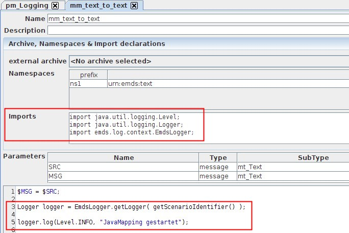

Scenario Logging

Topic content
It is possible to activate a scenario log for Orchestra. But with this, not all logging entries from the normal log will be written to separate log files automatically. The scenario log should better be seen as a logging of application data.
The logging entries in the scenario log are created in the following ways:
1.Scenario specific system events can be additionally written to the scenario log
2.The programmer writes log entries in the normal java logging mechanism way (EmdsLogger.getLogger())
3.Orchestra log events in process models write log entries
Activation of scenario logging
The scenario logging can be activated in the environment settings. The parameter "scenraio.enabled" of the group "logging" has to be set to "true":
<group name = "logging" >
...
<!--
scenario.enabled true - Scenario specific logging enabled
false - Scenario specific logging disabled
scenario.config relative path to the scenario specific configuration logging
-->
<parameter name = "scenario.enabled" value = "true" />
<parameter name = "scenario.config" value = "config/logging.properties.scenario" />
</group>
Afterwards, you have to adapt the file logging.properties.scenario in the config directory:
############################################################
# Configure scenario specific logging
############################################################
emds.log.scenario.level = INFO
emds.log.scenario.enabled = true
emds.log.scenario.loggername = emds.log.scenario.%s
# If you want to specify a scenario specific log-level use the following line
# replace the scenario-id with the actual scenario identifier
# emds.log.scenario.<scenario-id>.level = INFO
# Use the following lines to configure the log output
# For the attribute pattern the standard properties of java-util-logging can be used
# Futhermore the following parameters are supported by orchestra
# $(SCENARIO.ID) - Unique identifier of scenario
# $(SCENARIO_NAME) - Name of scenario
# %d - current date in format yyyyMMdd e.g. 20110718
emds.log.scenario.FileHandler.pattern = C:/temp/orchestra/log/%d_$(SCENARIO.NAME)_orchestra_%g.mlog
emds.log.scenario.FileHandler.limit = 250000
emds.log.scenario.FileHandler.count = 4
# emds.log.scenario.FileHandler.formatter = emds.log.context.LineFormatter
emds.log.scenario.FileHandler.formatter = emds.log.context.StandarFormatter
emds.log.scenario.FileHandler.parent = false
The path in the parameter "emds.log.scenario.FileHandler.pattern" has to be set to the same value as the log path from the configuration file .../logging.properties. Therefore, the scenario log files can be found in the same directory as the previous log files in Orchestra monitor.
Furthermore, the time stamp ("%d") should be removed from the file name, otherwise the log files will be created but never deleted!
Possibility 1: Scenario specific system events
If you want to write the system events to the scenario log, the parameter "scenario.log.enabled" of the group "EventEngine" in the environment settings has to be set to "true".
<group name = "EventEngine" >
...
<parameter name = "scenario.log.enabled" value = "true" />
Possibility 2: Java logging mechanism
If the programmer wants to write own log entries, he can use a logger.
Here is the code for an extended Java mapping:
// Imports:
import java.util.logging.Level;
import java.util.logging.Logger;
import emds.log.context.EmdsLogger;
// Szenario-Logger besorgen
Logger logger = EmdsLogger.getLogger( getScenarioIdentifier() );
logger.log(Level.INFO, "JavaMapping gestartet");

In the scenario log the following output appears:
10.11/11:14:54.918 INFO [22] .mm_95text_95to_95text.execute: JavaMapping gestartet
Possibility 3: Log events in process models
If a log event is added to a process model, you have the possibility to write the entry in the scenario log as shown in the figure below.
In the scenario log the following output appears:
10.11/11:14:54.938 INFO [22] cute.TriggerLogHandler.onEnter: log event[V:ORC_001415614494905_000000000007400/VOLATILE:0] Processmodell: pm_Logging